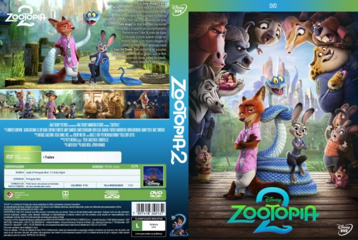
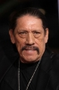

![link to Zootopia 2 [Autorado] on Rotten Tomatoes](../img/tomatoes.png)
![link to Zootopia 2 [Autorado] on TheMovieDb](../img/themoviedb.png)

País:United States, 108 minutos
Idiomas falados:Inglês, Português
Gênero(s):Animação, Comédia, Aventura, Família, Mistério
Diretor(s):Jared Bush, Byron Howard
Escritor(es):Jared Bush
Codec:MPEG-2 (DVD)
Número: 5917


Certificado:10
Sinopse:
Os heróis e policiais novatos Judy Hopps e Nick Wilde estão de volta para mais uma aventura extravagante pela grande metrópole animal de Zootopia. Após desvendarem o maior caso da história da cidade, Judy e Nick são surpreendidos por uma ordem do Chefe Bogo: os dois detetives precisarão frequentar o programa de aconselhamento Parceiros em Crise. A união da dupla é colocada à prova quando surge um mistério ligado a um recém-chegado à cidade: o misterioso e venenoso réptil Gary De’Snake. Para encontrar as soluções para o caso envolvendo a víbora, Judy e Nick devem desvendar novas partes da cidade, sendo testados o tempo todo.
Elenco: 
Tipo de mídia: DVD5,
Legendas: Português, Sem Legendas
Alugado: Não
Tela: Anamorphic Widescreen